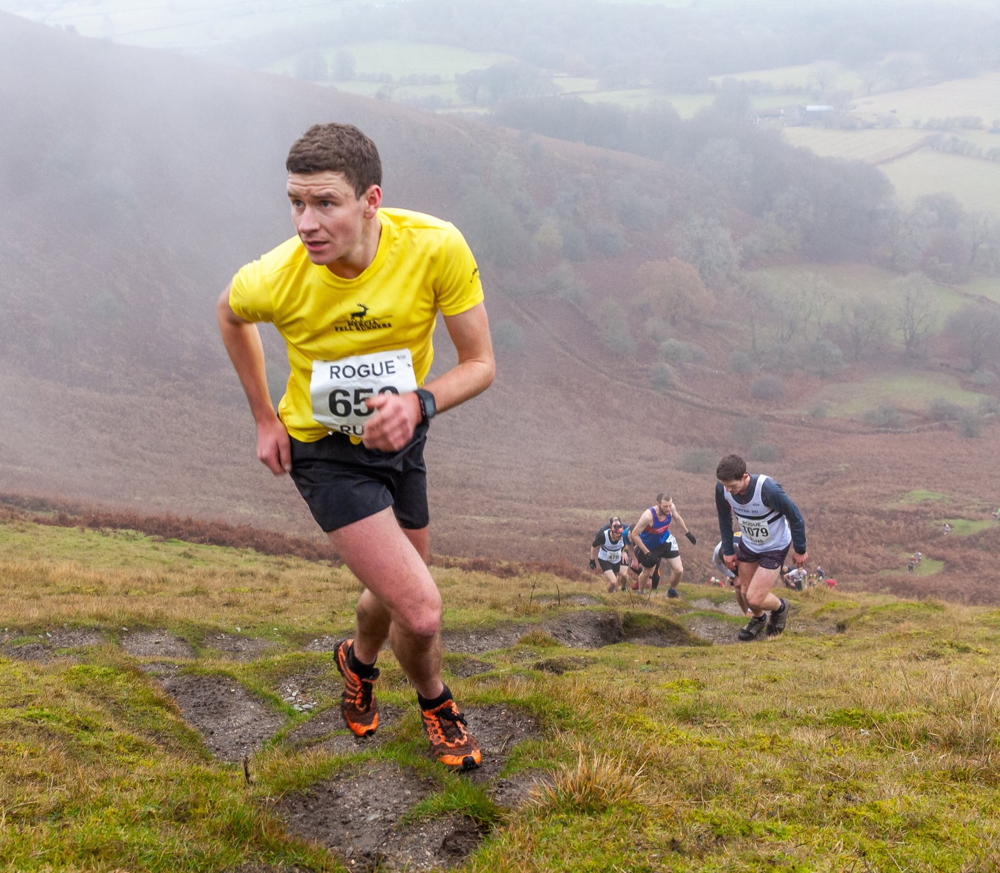
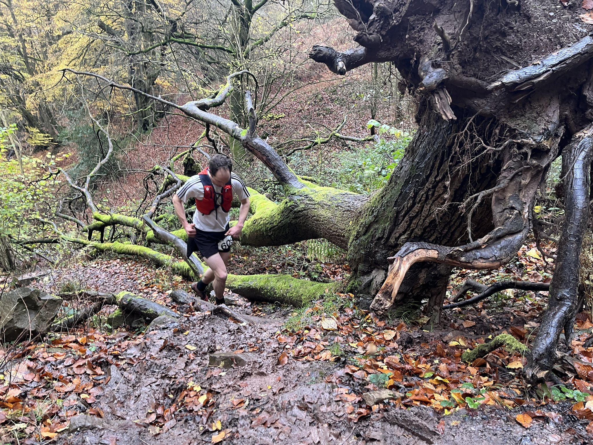
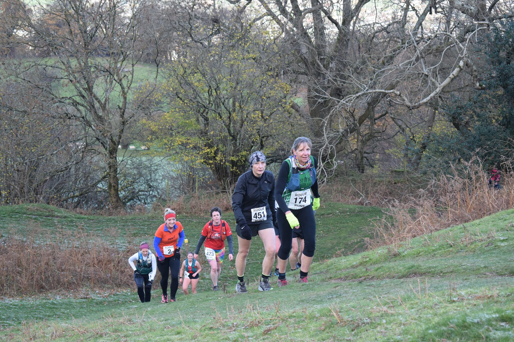
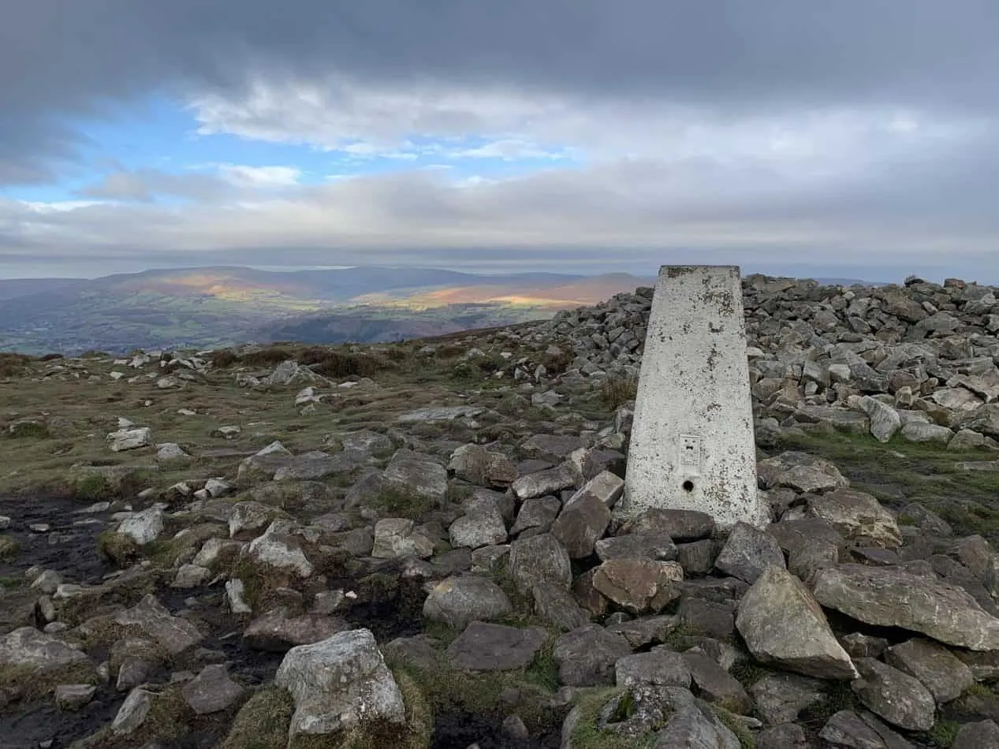
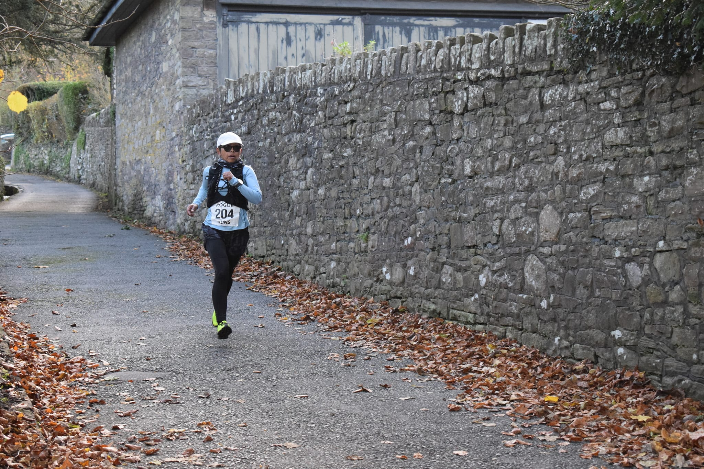

5.7 km · 485 m ascent
Route
Llwybr
The 2026 race starts at the bottom of Church Lane, Llanfoist.

The authoritative 2026 route and map have not yet been published. Further details will be published before entries open. The guide and photographs below show the route used previously and should not be relied on as the confirmed 2026 route.

Previous route guide
From village to summit and back
-
The start
Y cychwyn -
The tunnel
Y twnnel -
The tram road
Y ffordd drams
-
The steep bit
Y rhan serth
-
The trig, and now back down
Y trig, ac yn awr yn ôl i lawr
-
The finish
Y gorffen
2026 route documents
The confirmed route map and any public assessment information will be published when available.